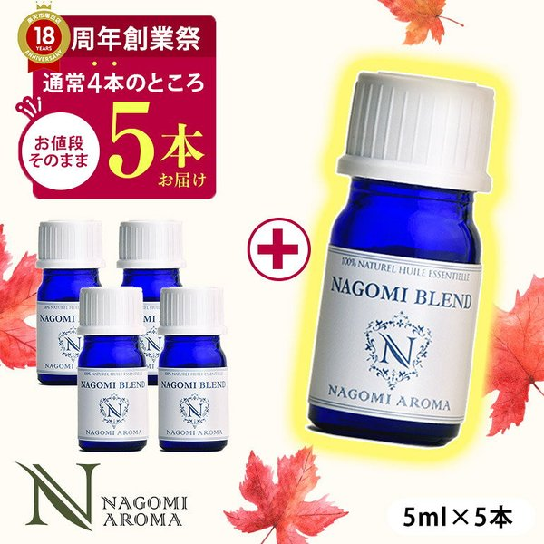
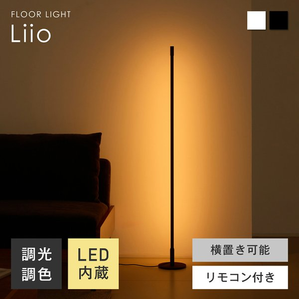
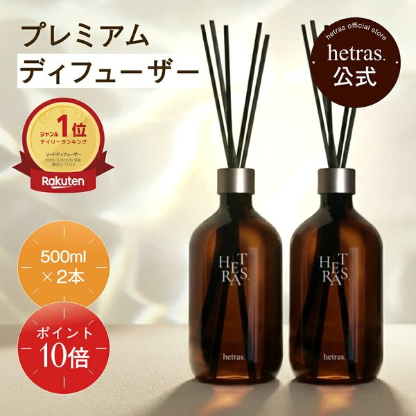
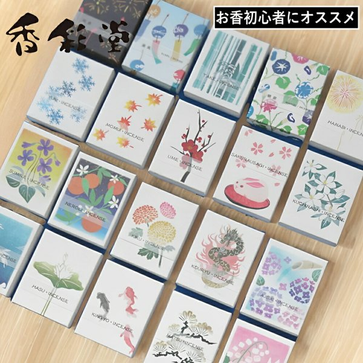
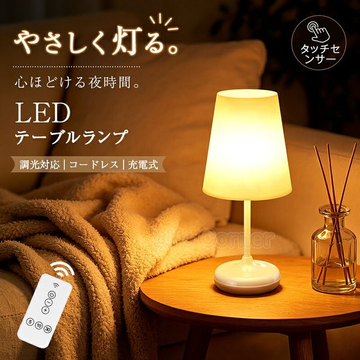
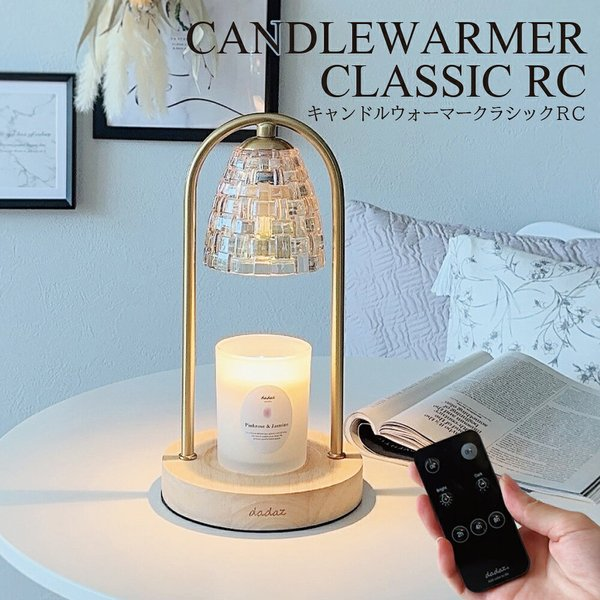
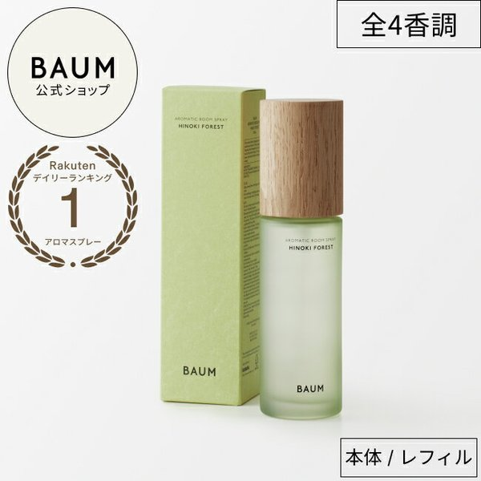
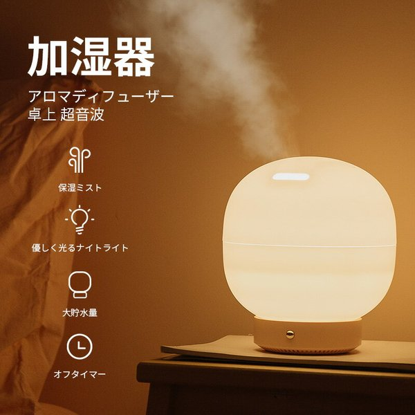
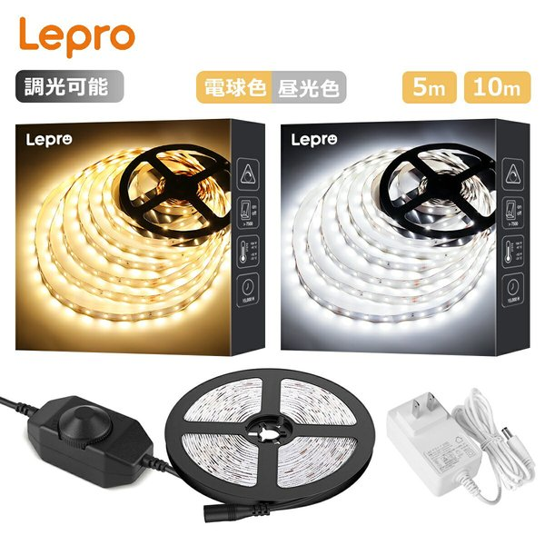

【2026年】冬の夜をホテルライクに｜間接照明・テーブルランプ・アロマ・キャンドルウォーマー10選
冬の夜は、部屋の明かりと香りで過ごしやすさが変わります。天井の白い光を消して、低い位置から照らすだけで、部屋は一気に落ち着きます。ホテルの部屋がくつろげるのは、照明がいくつにも分かれているからです。
選ぶ軸は、明かりの高さ、火を使うかどうか、そして香りの広がり方の3つです。床から照らすフロアライトやテープライトは、影が柔らかくなって部屋が広く見えます。テーブルランプは、ベッドサイドやダイニングの手元を照らすのに向いています。香りは、火を使わないリードディフューザーやルームスプレー、超音波式のディフューザー、キャンドルウォーマーから選べます。小さな子どもやペットがいる家は、火を使わないタイプを選んでください。
本記事では、楽天市場で人気・高評価の間接照明・テーブルランプ・アロマ雑貨10選を、実売価格とレビュー評価つきで写真付き紹介します。
- おすすめ10選 スペック・特徴比較表
- BEST 1｜ソイアロマキャンドル キャンドルランタン（天然素材・アロマキャンドル）
- BEST 2｜アロマオイル ブレンドオイル 5ml×4本セット（16種から選べる）
- BEST 3｜フロアライト Liio LED リモコン付き（調光・調色・横置き可能）
- BEST 4｜hetras プレミアム リードディフューザー 500ml（2個入り）
- BEST 5｜HANGA スリムインセンス 約90本入り（白檀・ムスク・アンバー）
- BEST 6｜LED テーブルランプ 充電式 コードレス（タッチセンサー・調光）
- BEST 7｜キャンドルウォーマー クラシックRC（タイマー付き・木目調）
- BEST 8｜BAUM アロマティック ルームスプレー（森林浴・樹木の香り）
- BEST 9｜アロマディフューザー 超音波式 500ml（タイマー・ナイトライト・静音）
- BEST 10｜Lepro LEDテープライト 電球色／昼光色（5m・10m選択）
- 【読者負担0円】買わなくても得する無料サービス
- まとめ：間接照明・アロマ雑貨10選の選び方
| 順位 | 商品名 | ブランド | 最大の特徴・おすすめ理由 | 総合評価 |
|---|---|---|---|---|
| BEST 1 | ソイアロマキャンドル キャンドルランタン（天然素材・アロマキャンドル） | HOMARE | 天然ソイワックス使用 | 4.57 |
| BEST 2 | アロマオイル ブレンドオイル 5ml×4本セット（16種から選べる） | NAGOMI AROMA（和み茶房） | 16種から4本選べる | 4.53 |
| BEST 3 | フロアライト Liio LED リモコン付き（調光・調色・横置き可能） | Liio | 上向き照射で部屋が柔らかく光る | 4.70 |
| BEST 4 | hetras プレミアム リードディフューザー 500ml（2個入り） | hetras | 500mlの大容量 | 4.50 |
| BEST 5 | HANGA スリムインセンス 約90本入り（白檀・ムスク・アンバー） | 香彩堂 | 京都・香彩堂のお香 | 4.79 |
| BEST 6 | LED テーブルランプ 充電式 コードレス（タッチセンサー・調光） | LIFE CORNER | 充電式で置き場所を選ばない | 4.34 |
| BEST 7 | キャンドルウォーマー クラシックRC（タイマー付き・木目調） | CLASSIC RC | 火を使わず香りを楽しめる | 4.68 |
| BEST 8 | BAUM アロマティック ルームスプレー（森林浴・樹木の香り） | BAUM（バウム） | 樹木系の落ち着いた香り | 4.42 |
| BEST 9 | アロマディフューザー 超音波式 500ml（タイマー・ナイトライト・静音） | SEIMINA | 500mlで最長10時間 | 4.33 |
| BEST 10 | Lepro LEDテープライト 電球色／昼光色（5m・10m選択） | Lepro | 貼るだけで間接照明になる | 4.65 |
ソイアロマキャンドル キャンドルランタン（天然素材・アロマキャンドル）

天然素材のソイワックスを使ったアロマキャンドル。灯すと炎が揺れて、部屋の明かりを落としたときの光源としても使えます。香りはフローラル系から落ち着いた系統まで揃い、焚き火のような香りのタイプもあります。ソイワックスはすすが出にくく、煤が付きにくいのがうれしいところ。1本あるだけで、夜の過ごし方が変わります。楽天市場での実売価格は約2,150円（2026年11月時点）。
- 天然ソイワックス使用
- 炎が光源にもなる
- すすが出にくい
- 火を使うため、寝るときは消してから休む
アロマオイル ブレンドオイル 5ml×4本セット（16種から選べる）

16種類の香りから4本を選べるブレンドアロマオイル。5mlの小瓶なので、ディフューザーに入れて試し、気に入った香りだけを大きく買い足す使い方ができます。ラベンダーやベルガモットなど定番から、柑橘系の爽やかな香りまで揃っています。11月中は1本増量されるので、初めての香りを試す機会にもなります。楽天市場での実売価格は約1,200円（2026年11月時点）。
- 16種から4本選べる
- 5mlで試してから買い足せる
- 11月中は1本増量
- 5mlの小瓶なので、毎日使うと減りが早い
フロアライト Liio LED リモコン付き（調光・調色・横置き可能）

細い支柱のLEDフロアライト。上を向いて照らすので、天井に光が当たって部屋全体が間接照明のような柔らかい明るさになります。リモコンで調光・調色ができ、寝る前は暖色の弱い光、作業するときは昼白色と切り替えられます。横置きもできるので、ソファの後ろやベッドサイドにも置けます。楽天市場での実売価格は約8,784円（2026年11月時点）。
- 上向き照射で部屋が柔らかく光る
- リモコンで調光・調色
- 横置きもできる
- 支柱が細いので、倒れない場所に置く
hetras プレミアム リードディフューザー 500ml（2個入り）

ホテルのロビーのような香りを部屋に置けるリードディフューザー。500mlの大容量で、2個入りのセットなら玄関とリビングに分けて置けます。火を使わないので、小さな子どもやペットがいる家でも気軽に使えます。スティックの本数を増やすと香りが強くなるので、最初は少なめから調整するのがおすすめです。楽天市場での実売価格は約3,500円（2026年11月時点）。
- 500mlの大容量
- 火を使わず安全
- スティックで香りの強さを調整
- 香りが強いため、狭い部屋ではスティックを減らす
HANGA スリムインセンス 約90本入り（白檀・ムスク・アンバー）

京都の香舗、香彩堂のお香。短いスリムタイプで、約90本入りです。白檀やムスク、アンバーといった落ち着いた香りが中心で、焚くと部屋の空気が静かになります。線香立てがあれば使える手軽さで、1本あたりの燃焼時間も短めなので、寝る前の10分だけ焚くといった使い方ができます。楽天市場での実売価格は約1,100円（2026年11月時点）。
- 京都・香彩堂のお香
- 約90本入り
- 短時間で焚けるスリムタイプ
- 線香立てが別に必要
LED テーブルランプ 充電式 コードレス（タッチセンサー・調光）

コンセントを探さずに置ける、充電式のLEDテーブルランプ。タッチセンサーで明るさを変えられ、コードレスなのでベッドサイドやダイニングのテーブルへ自由に移動できます。シェードがすりガラス調で、光が直接目に入らず柔らかく広がります。授乳や寝かしつけのときの常夜灯としても使える明るさです。楽天市場での実売価格は約2,480円（2026年11月時点）。
- 充電式で置き場所を選ばない
- タッチで調光できる
- 常夜灯にも使える柔らかい光
- 充電式のため、使用時間は連続数時間程度
キャンドルウォーマー クラシックRC（タイマー付き・木目調）

キャンドルの上からランプで温め、香りを立ち上げるキャンドルウォーマー。火を灯さないので、炎の管理をせずに香りだけを楽しめます。タイマー付きで、就寝前に切れるように設定しておけば消し忘れの心配もありません。木目調のベースとガラスのシェードで、部屋に置いたときの見た目も落ち着きます。楽天市場での実売価格は約5,099円（2026年11月時点）。
- 火を使わず香りを楽しめる
- タイマー付きで消し忘れ防止
- 木目調でインテリアに馴染む
- キャンドルは付属しないため、別に用意する
BAUM アロマティック ルームスプレー（森林浴・樹木の香り）

樹木の香りを中心に作られたルームスプレー。シュッとひと吹きで、部屋の空気が森の中のような落ち着いた香りに変わります。リネンやカーテンにも使えるので、来客前や寝る前の切り替えにも便利です。自然由来の原料を使ったブランドで、強い甘さがないぶん、男性の部屋にも置きやすい香りです。楽天市場での実売価格は約3,850円（2026年11月時点）。
- 樹木系の落ち着いた香り
- リネン・カーテンにも使える
- 自然由来原料のブランド
- 香りの持続は短く、数時間で薄れる
アロマディフューザー 超音波式 500ml（タイマー・ナイトライト・静音）

500mlの水で最長10時間ほど加湿しながら香りを広げる、超音波式のアロマディフューザー。ノズルが360度回るので、噴霧の向きを部屋の形に合わせられます。ナイトライト付きで、照明を落としたときに足元の目印にもなります。空焚き防止とタイマー付きで、寝る前に電源を入れても安心して使えます。楽天市場での実売価格は約4,880円（2026年11月時点）。
- 500mlで最長10時間
- 360度回るノズル
- 空焚き防止・タイマー付き
- 水を入れて使うため、毎日の水替えと手入れが要る
Lepro LEDテープライト 電球色／昼光色（5m・10m選択）

家具の裏やベッドの下に貼るだけで、間接照明が作れるLEDテープライト。電球色と昼光色を選べ、5mと10mから長さを決められます。粘着テープで固定でき、ハサミで切って長さを調整できるので、棚の幅に合わせて使いやすいです。天井の照明を消して、このテープだけにすると部屋が一気に落ち着きます。楽天市場での実売価格は約2,599円（2026年11月時点）。
- 貼るだけで間接照明になる
- 電球色・昼光色から選べる
- ハサミで長さを調整できる
- 粘着テープは壁紙によっては跡が残る
この記事の商品を買う前に、まずは無料で得する選択肢をチェック。どれも登録・利用は0円で、無料期間中に解約すれば料金はかかりません。読みたい雑誌がある人、ポイントを貯めたい人、アンケートなら気軽という人、それぞれに合うものを選べます。
初回31日無料・無料期間中に解約すれば0円 → 楽天ポイントモール｜登録無料で毎日ポイ活
買い物なしでもポイントが貯まる無料サービス → 楽天インサイト｜アンケートに答えてポイント
登録無料・すきま時間のアンケートで貯まる → 楽天カード｜年会費永年無料
新規発行・年会費ずっと0円 →
4つのサービスの違いと使い分けは「出費0円で得する！買わずにポイントが貯まる無料サービス厳選4選」でまとめています。
💡 まとめ：間接照明・アロマ雑貨10選の選び方
冬の部屋を整えるなら、照明と香りの2つから始めてください。まず天井の明かりを消して、フロアライトやテープライトで床を照らす。手元にはテーブルランプを置き、寝る前はキャンドルかキャンドルウォーマーの灯りにする。香りは、玄関とリビングにリードディフューザー、寝室にはアロマディフューザーかお香、来客前にはルームスプレーと、場所で使い分けると部屋の印象がはっきり変わります。火を使うキャンドルは、消してから休む習慣とセットにしてください。
楽天市場では「5と0のつく日」や「お買い物マラソン」などのキャンペーンに合わせて購入すると、ポイント還元が最大化してお得に手に入ります。ぜひチェックしてみてくださいね。